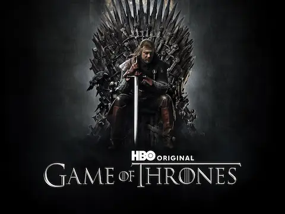

A Knight of the Seven Kingdoms se llevó el Emmy al Mejor Drama en la ceremonia del 14 de septiembre, superando a The Bear en la categoría más disputada de la noche. Es el primer premio al Mejor Drama del universo Westeros desde 2019, cuando Game of Thrones ganó por última vez. La serie sobre las aventuras de Dunk y Egg en los años oscuros de Westeros — basada en las novellas de George R.R. Martin con una fidelidad que el autor ha elogiado repetidamente — suma así el reconocimiento de la industria a la ovación unánime de la crítica que lleva acumulando desde su estreno en enero de 2026.
George R.R. Martin publicó en X una reacción que la comunidad llevaría semanas citando: "This one got it right." Cuatro palabras que resumen perfectamente la distancia emocional que el autor ha marcado entre esta producción y House of the Dragon a lo largo de todo 2026. El showrunner Nico Muhly, que adaptó las novellas de Dunk y Egg con una fidelidad que ha convertido en el referente de cómo tratar el material de Martin en pantalla, recibió el premio junto al equipo de producción de HBO.
El contraste con House of the Dragon T3 es inevitable y no requiere elaboración: mientras HotD terminó su temporada con el blog eliminado de Martin y la frase "this is not my story anymore", AKOTSK cierra su primer año con un Emmy al Mejor Drama y el autor en la sala celebrando. Dos producciones del mismo universo, el mismo año, con recepciones diametralmente opuestas de su creador. Es uno de los momentos más irónicos de la historia reciente de la televisión de fantasía. La victoria de AKOTSK también abre conversaciones interesantes sobre el futuro del universo Westeros. Con la T4 de HotD confirmada como temporada final para 2028, y AKOTSK recién coronada en los Emmy, HBO tiene ahora dos datos muy distintos sobre qué quiere el mercado. La serie de Dunk y Egg puede perfectamente sobrevivir a HotD y convertirse en el pilar del universo Westeros durante años. Para Martin, que sigue sin fecha para The Winds of Winter pero al menos tiene un Emmy del Mejor Drama que celebrar, 2026 cierra mejor de lo que empezó.